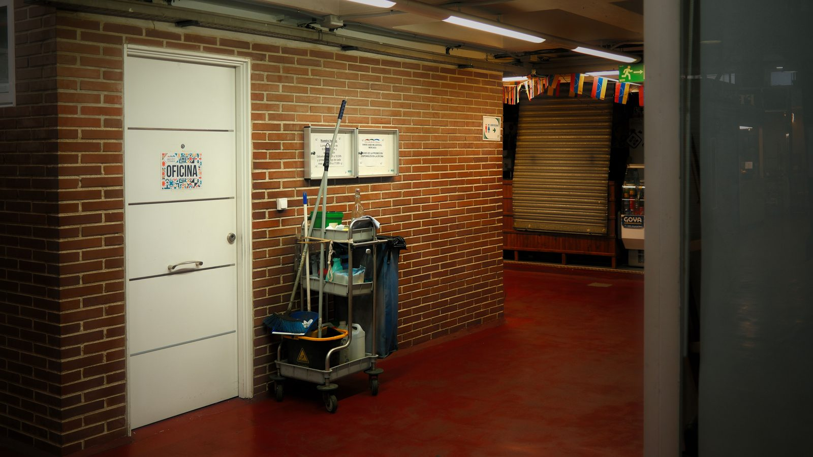

Itapema · Poder Público
Itapema · Poder PúblicoA despesa corrente de Itapema subiu para 97,78% da receita em agosto, depois de ficar abaixo do teto de 95% até abril
Para onde vai o dinheiro do custeio da cidade, mês a mês.
A Prefeitura publicou no Diário Oficial dos Municípios, na sexta-feira 2 de outubro, o 5º termo aditivo do contrato 023/2024. Ele prorroga por 12 meses, até 30 de setembro de 2027, a limpeza e a conservação de escolas, postos de saúde e demais prédios do município, por R$ 16.251.501,12. O contrato original, de 1º de abril de 2024, valia R$ 10.981.731,72 pelo mesmo prazo. Fomos ler todos os aditivos publicados: somados, o contrato já passa de R$ 33,3 milhões.
Em 30 segundos · Modo de Leitura, formato original Santa Informa
Quem limpa escola e posto de saúde em Itapema não é servidor.
É empresa contratada, e o contrato tem nome: 023/2024.
A empresa é a LVC LOG.
Ela limpa, conserva e leva o material.
O contrato venceu em 30 de setembro.
A Prefeitura renovou por mais 12 meses.
Vai até 30 de setembro de 2027.
O valor dessa renovação é R$ 16.251.501,12.
O papel saiu no Diário Oficial na sexta-feira.
Em 2024, o mesmo contrato por 12 meses custava R$ 10,98 milhões.
De lá para cá a conta subiu 47,99%.
Fomos atrás de cada aditivo do contrato.
Somando tudo que foi publicado, dá R$ 33.371.834,47.
A última lista de pessoal publicada tem 195 postos.
São 180 serventes de limpeza e 15 zeladores.
125 deles estão na Educação.
Escola, creche, CMEJA, contraturno.
Outros 27 estão na Saúde.
O resto se espalha pela cidade inteira.
Paço, rodoviária, cemitério, Procon, CRAS.
Até o quartel da Polícia Militar entra na lista.
Um servente custa R$ 5.595,01 por mês ao município.
Esse valor está parado desde maio de 2025.
Multiplicando os 195 postos por 12 meses, dá R$ 13,11 milhões.
O aditivo é R$ 3,13 milhões maior que isso.
O extrato não explica a diferença.
Não diz se entrou gente nova.
E não diz se houve reajuste de preço.
Outra coisa: o 3º aditivo não aparece no Diário.
Procuramos de três jeitos e não achamos.
A soma dos aditivos é conta nossa.
Poder PúblicoPublicada em Redação Santa Informa

A Prefeitura de Itapema publicou no Diário Oficial dos Municípios, na sexta-feira 2 de outubro, o extrato do 5º termo aditivo do contrato 023/2024. Ele prorroga por 12 meses, de 1º de outubro de 2026 a 30 de setembro de 2027, a limpeza, a conservação e a higienização das unidades e edifícios do município, com mão de obra, material e equipamento. O valor é de R$ 16.251.501,12, a empresa é a LVC LOG e a assinatura saiu em 30 de setembro, último dia de validade do contrato anterior.
O contrato nasceu em 1º de abril de 2024, assinado pela então prefeita Nilza Nilda Simas, e valia R$ 10.981.731,72 por 12 meses. De um ano de serviço para o outro, a conta subiu 47,99%.
Abrimos tudo o que saiu sobre esse contrato. O 1º aditivo, de março de 2025, prorrogou o serviço por seis meses por R$ 6.099.436,56, com INPC de 4,8665%. O 2º, de junho de 2025, repactuou preços e acrescentou sete postos. O 4º, de março de 2026, acrescentou um posto de servente por R$ 39.165,07. Somando o contrato e os aditivos com valor publicado, dá R$ 33.371.834,47, conta nossa que não existe pronta em lugar nenhum.
A última lista de pessoal publicada é a do 2º aditivo: 179 serventes e 15 zeladores. Com o posto acrescentado em março, são 195. A maior parte está na escola: a Educação fica com 125 dos 195, entre ensino fundamental, infantil, CMEJA, NAES e contraturno. A Saúde fica com 27. Os outros se espalham por Paço Municipal, rodoviária, cemitério, Procon, CRAS, delegacia da mulher e até o quartel da Polícia Militar.
O custo mensal de um servente saiu de R$ 5.159,08, em abril de 2024, para R$ 5.595,01, vigente desde maio de 2025, alta de 8,45%. O de um zelador foi de R$ 5.250,96 para R$ 5.718,96. Multiplicando esses valores pelos 195 postos, 12 meses dariam R$ 13.114.634,40. O aditivo é R$ 3.136.866,72 maior, 23,92% acima. A diferença pode ser posto novo, reajuste ou os dois, e o extrato não diz qual.
O resumo de 30 segundos está no topo e a versão completa é o texto acima. Aqui ficam as três leituras da casa sobre o mesmo assunto.
Clara, a otimista
Tem uma coisa boa escondida nesse papel: o serviço não parou. O contrato vencia em 30 de setembro e a renovação foi assinada no dia 30 de setembro. Quem já viu escola abrir sem banheiro limpo porque o contrato caducou sabe o tamanho disso.
E repare para onde vai a maior parte do dinheiro. De cada três postos, dois estão na Educação. É gente que limpa o chão da creche onde seu filho passa o dia inteiro. Esse é um lugar razoável para o dinheiro da cidade estar.
Seu Prudêncio, o criterioso
Merece atenção a diferença entre o valor do aditivo e a conta dos postos. Pelas últimas tabelas publicadas, 195 postos por 12 meses dão R$ 13,11 milhões, e o aditivo traz R$ 16,25 milhões. Pode haver explicação inteira e correta no processo, mas ela não está no que o cidadão consegue ler.
Uma sugestão útil: publicar junto do extrato a relação de postos por secretaria e o valor unitário mensal, como os aditivos anteriores faziam. Custa uma página a mais e resolve a dúvida antes que ela vire assunto. Vale acompanhar também o 3º aditivo, que não encontramos no Diário.
Dito isso, reconheço o acerto no essencial. Renovar contrato de limpeza de escola e de posto de saúde no prazo, sem deixar vencer, é administração funcionando. Quem já viu o contrário sabe o estrago que dá.
Caco, o sarcástico
R$ 16,25 milhões para varrer, lavar e passar pano. Parece muito até você lembrar que são 195 pessoas trabalhando todo dia em escola, creche, posto, rodoviária, cemitério e até no quartel da PM. Aí vira R$ 183 por morador por ano. Menos que a conta de internet.
O que me diverte é o detalhe do cemitério ter servente e o Procon também. Em Itapema, todo mundo é atendido com o piso limpo, dos vivos aos que já reclamaram o suficiente.
E o melhor: o contrato foi renovado no último dia, às vésperas de virar o mês. A Prefeitura entregou o trabalho em cima do prazo, igual a todo mundo. É bom saber que o poder público também é gente.
Fontes: todos os documentos estão no Diário Oficial dos Municípios de Santa Catarina, na entidade Prefeitura municipal de Itapema. O extrato do 5º termo aditivo ao contrato 023/2024 foi publicado em 2 de outubro de 2026. O extrato do contrato original saiu em 16 de abril de 2024, e um primeiro extrato do mesmo contrato, publicado em 9 de abril de 2024, trazia R$ 10.863.464,52. Os valores mensais por posto estão no 1º termo de apostilamento, de 2024, e no 2º termo aditivo, de 16 de julho de 2025, que também traz a relação de postos por secretaria. O 1º termo aditivo saiu em 9 de abril de 2025 e o 4º termo aditivo em 13 de abril de 2026. A população estimada de Itapema é a da tabela 6579 do IBGE. As somas, as divisões e as comparações entre os valores são conta nossa. As buscas pelo 3º termo aditivo foram feitas no mesmo Diário em 4 de outubro de 2026, pelo número do contrato, pelo nome da empresa e pela expressão do documento, e não devolveram resultado.
Itapema · Poder PúblicoPara onde vai o dinheiro do custeio da cidade, mês a mês.
 Itapema · Poder Público
Itapema · Poder PúblicoO outro lado da folha: o que o município paga a quem é servidor.
 Litoral · Economia
Litoral · EconomiaA mesma conta nas cidades vizinhas, para efeito de comparação.